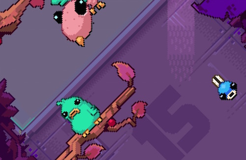

Clash of clans is a progressive strategy game in which people will have to build new defenses and upgrade existing buildings in order to gain power strength and money. The currencies that are currently in the game are Elixir, Dark Elixir, Gems and Gold. The main goal of clash of clans is to progressively get a larger and harder to destroy base and go take down other bases. Not to worry, because your base cannot be permanently destroyed. I will come back and have no damage, the only thing that will be gone is a percentage of your "loot" (game currency).
One of the ways in which clash of clans keeps its balance is by ranking players by skill, if you have a certain amount of trophies you will fight a player with the same if not similar number of them. I would rate clash of clans a 7/10 because when you progress to becoming a town hall 4 or town hall 5 the upgrading takes a long time. One way you can speed up your upgrades is by buying more builders in the game or spending gems which you can get from completing achievements clearing debris from your base and purchasing it from the in-app-purchases also known as the shop.
"Cooped Up" is a platforming game created by Nitrome. This app is currently available for download on the iOS devices with no charge, however there are advertisements that will cost money to remove. Don't let that steer you way from this extremely addictive strategy that requires memory skills as well as timing and precision. In "Cooped Up" the objective is to get to higher beams without knocking into other birds. If you have ever played a strategic platforming game, you know what it's like to crush your score and show it off to your friends. As you get up to higher beams. They change to branches and there are many other obstacles to overcome in your path. For example some birds sit still while others squawk and fly at fast speeds to try and mess you up. I would rate "Cooped Up" a 6/10 because the game is at some points repetitive and the advertisement removal fee is irritating. However you could argue for a 7/10 because the fun sounds and graphics.